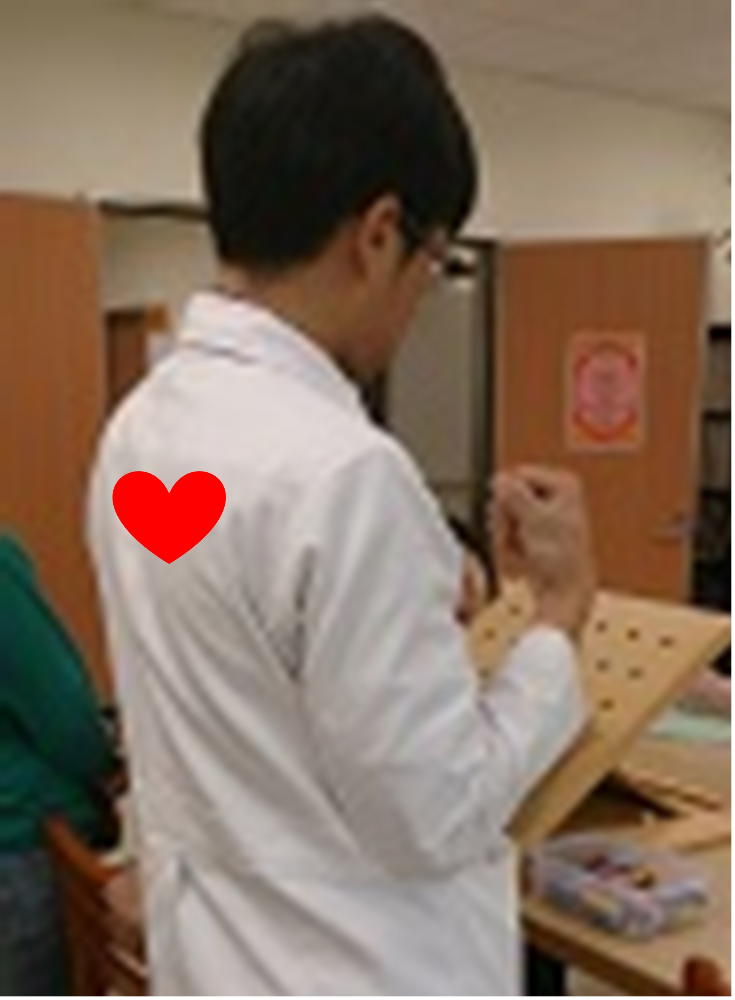

針對血管系統及傷口恢復為主術後 1 到 4 週
這個階段傷口照護及血液循環的監測是必要的。由於重接的血管容易被血栓塞住，因此病患應避免抽菸及攝取咖啡因、巧克力等影響血液循環的食物，且需注意手部保暖。
此階段建議以單手（好手）操作日常生活的活動。
傷口照護
避免碰水，保持傷口清潔，避免感染
使用術後敷料包紮；可露出指甲與指腹，觀察血液循環是否暢通
拆線後傷口癒合後可使用深壓按摩
抬高受傷的手至心臟高度以降低血管壓力，但不宜超過心臟高度

維持血液循環，包含：
注意血液循環，當患肢溫度低於30℃，表示血液循環不良。
注意手部保暖
避免抽菸及攝取咖啡因、巧克力等影響血液循環的食物